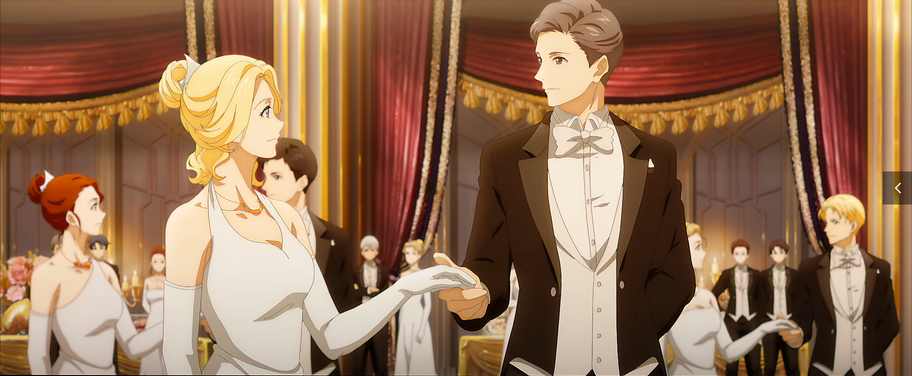
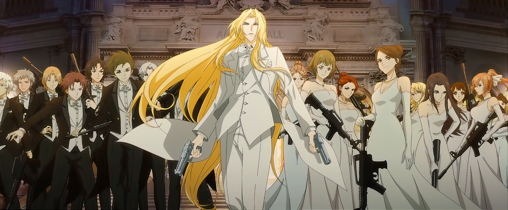

表面
卡塞尔学院是一所位于美国伊利诺伊州芝加哥远郊的私立大学，和芝加哥大学是联谊学校，每年都在密歇根湖联合举办舞会、马术、赛艇、热气球、游泳等校际比赛活动，此外还有更加广泛的学术交流。学院主要研究方向是古代爬行类动物，毕业包分配工作。

实质
卡塞尔学院由混血种中的秘党组织创建，校名来自殒落的著名屠龙家族卡塞尔家族，主要功能是为秘党培养优秀的混血种人才、收集研究关于龙族的一切信息、研制新型的杀伤性武器，以及尽一切力量屠龙。学生入学前要签订秘党核心契约——炼金古卷《亚伯拉罕血统契》(Abraham Indenture，缩写为AI)，入学即意味着加入秘党，毕业后驻扎世界各地的学院执行部分部。
